1과목: 재료역학
1. 왼쪽이 고정단인 길이 ℓ 의 외팔보가 ω의 균일분포하중을 받을 때, 굽힘모멘트선도(BMD)의 모양은?
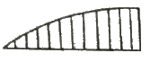
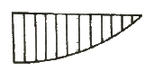
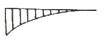
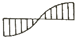
2. 두께 8mm의 강판으로 만든 안지름 40cm의 얇은 원통에 1MPa의 내압이 작용할 때 강판에 발생하는 후프 응력(원주 응력)은 몇 MPa인가?
3. 그림과 같은 가는 곡선보가 1/4 원 형태로 있다. 이 보의 B 단체 Mo의 모멘트를 받을 때, 자유단의 기울기는? (단, 보의 굽힘 강성 EI는 일정하고, 자중은 무시한다.)
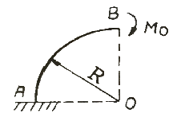
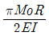
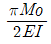
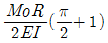
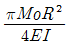
4. 단면이 가로 100mm, 세로 150mm인 사각 단면보가 그림과 같이 하중(P)을 받고 있다. 전단응력에 의한 설계에서 P는 각각 100 kN 씩 작용할 때 안전계수를 2로 설계하였다고하면, 이 재료의 허용전단응력은 약 몇 MPa 인가?
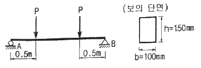
5. 지름 3mm의 철사로 평균지름 75mm의 압축코일 스프링을 만들고 하중 10N에 대하여 3cm의 처짐량을 생기게 하려면 감은 회수(n)는 대략 얼마로 해야 하는가? (단, 전단 탄성계수는 G=88GPa 이다.)
6. 길이가 L(m)이고, 일단 고정에 타단 지지인 그림과 같은 보에 자중에 의한 분포하중 w(N/m)가 보의 전체에 가해질 때 점 B에서의 반력의 크기는?
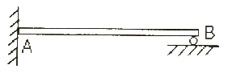
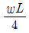
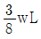
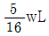
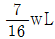
7. σx=400MPa, σy=300MPa, τxy=200MPa가 작용하는 재료 내에 발생하는 최대 주응력의 크기는?
8. 그림과 같은 단면에서 가로방향 중립축에 대한 단면 2차모멘트는?
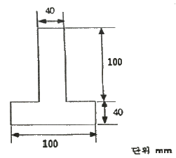
9. 그림과 같은 계단 단면의 중실 원형축의 양단을 고정하고 계단 단면부에 비틀림 모멘트 T가 작용할 경우 지름 D1과 D2의 축에 작용하는 비틀림 모멘트의 비 T1/T2은? (단, D1 = 8cm, D2 = 4cm, ℓ1 = 40cm, ℓ2 = 10cm 이다.)
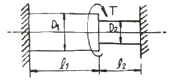
10. 그림과 같은 외팔보가 집중 하중 P를 받고 있을 때, 자유단에서의 처짐 δA는? (단, 보의 굽힘 강성 EI는 일정하고, 자중은 무시한다.)
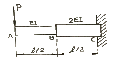
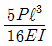
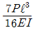
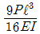
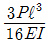
11. 무게가 각각 300N, 100N 인 물체 A, B 가 경사면 위에 놓여있다. 물체 B와 경사면과는 마찰이 없다고 할 때 미끄러지지 않을 물체 A와 경사면과의 최소 마찰 계수는 얼마인가?
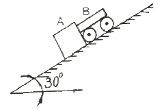
12. 그림과 같은 직사각형 단면의 단순보 AB에 하중이 작용할 때, A단에서 20cm 떨어진 곳의 굽힘 응력은 몇 MPa인가? (단, 보의 폭은 6cm이고, 높이는 12cm 이다.)
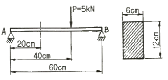
13. 강체로 된 봉 CD가 그림과 같이 같은 단면적과 재료가 같은 케이블 ①, ②와 C점에서 힌지로 지지되어 있다. 힘 P 에 의해 케이블 ①에 발생하는 응력(σ)은 어떻게 표현되는가? (단, A는 케이블의 단면적이며 자중은 무시하고, a는 각 지점간의 거리이고 케이블 ①, ②의 길이 ℓ은 같다.)
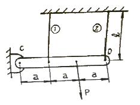
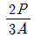
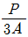
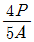
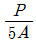
14. 재료가 전단 변형을 일으켰을 때, 이 재료의 단위 체적당 저장된 탄성에너지는? (단, τ는 전단응력, G는 전단 탄성계수이다.)
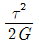
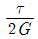
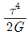
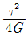
15. 바깥지름 50cm. 안지름 40cm의 중공원통에 500kN의 압축하중이 작용했을 때 발생하는 압축응력은 약 몇 MPa인가?
16. 그림과 같이 단순보의 지점 B에 Mo의 모멘트가 작용할 때 최대 굽힘 모멘트가 발생되는 A단에서부터 거리 x는?
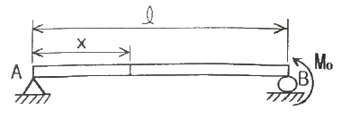
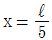
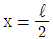
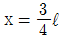
17. 그림과 같은 트러스가 점 B에서 그림과 같은 방향으로 5kN의 힘을 받을 때 트러스에 저장되는 탄성에너지는 몇 kJ 인가? (단, 트러스의 단면적은 1.2cm2, 탄성계수는 106Pa 이다.)
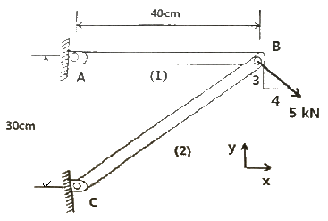
18. 원형막대의 비틀림을 이용한 토션바(torsion bar) 스프링에서 길이와 지름을 모두 10%씩 증가시킨다면 토션바의 비틀림 스프링상수(비틀림 토크/비틀림 각도)는 몇 배로 되겠는가?
19. 양단이 현지인 기둥의 길이가 2m이고, 단면이 직사각형(30mm × 20mm)인 압축 부채의 좌굴하중을 오일러 공식으로 구하면 몇 kN인가? (단, 부재의 탄성 계수는 200 GPa이다.)
20. 길이가 2m인 환봉에 인장하중을 가하여 변화된 길이가 0.14cm일 때 변형률은?
2과목: 기계열역학
21. 절대 온도가 0에 접근할수록 순수 물질의 엔트로피는 0에 접근한다는 절대 엔트로피 값의 기준을 규정한 법칙은?
22. 오토사이클(Otto cycle)의 압축비 ε=8 이라고 하면 이론 열효율은 약 몇 %인가? (단, k=1.4 이다.)
23. 대기압 하에서 물을 20℃에서 90℃로 가열하는 동안의 엔트로피 변화량은 약 얼마인가? (단, 물의 비열은 4.184kJ/kg ·K로 일정하다.)
24. 펌프를 사용하여 150 kPa, 26℃의 물을 가역단열과정으로 650 kPa로 올리려고 한다. 26℃의 포화액의 비체적이 0.001 m3/kg이면 펌프일은?
25. 기본 Rankine 사이클의 터빈 출구 엔탈피 hte = 1200 kJ/kg, 응축기 방열량 qL = 1000kJ/kg, 펌프 출구 엔탈피 hpe = 210 kJ/kg, 보일러 가열량 qH = 1210 kJ/kg 이다. 이 사이클의 출력일은?
26. 어떤 냉장고에서 엔탈피 17 kJ/kg의 냉매가 질량 유량 80 kJ/kg로 증발되어 들어가 엔탈피 36 kJ/kg가 되어 나온다. 이 냉장고의 냉동능력은?
27. 실린더에 밀폐된 8kg의 공기가 그림과 같이 P1=800 kPa, 체적 V1=0.27m3에서 P2=350 kPa, 체적 V2=0.80 m3 으로 직선 변화하였다. 이 과정에서 공기가 한 일은 약 몇 kJ 인가?
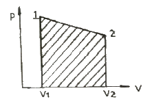
28. 공기 2kg이 300K, 600kPa 상태에서 500K, 400kPa 상태로 가열되었다. 이 과정 동안의 엔트로피 변화량은 약 얼마인가? (단, 공기의 정적비열과 정압비열은 각각 0.717 kJ/kg·K과 1.004 kJ/kg ·K 로 일정하다.)
29. 자연계의 비가역 변화와 관련 있는 법칙은?
30. 상태와 상태량과의 관계에 대한 설명 중 틀린 것은?
31. 배기체적이 1200 cc, 간극체적이 200 cc의 가솔린 기관의 압축비는 얼마인가?
32. 클라우지우스(Clasusis) 부등식을 표현한 것으로 옳은 것은? (단, T는 절대 온도, Q는 열량을 표시한다.)
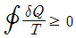
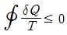
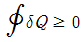
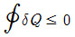
33. 이상기체의 등온과정에 관한 설명 중 옳은 것은?
34. 해수면 아래 20m에 있는 수중다이버에게 작용하는 절대압력은 약 얼마인가? (단, 대기압은 101 kPa 이고, 해수의 비중은 1.03이다.)
35. 용기에 부착된 압력계에 읽힌 계기압력이 150 kPa이고 국소대기압이 100 kPa 일 때 용기안의 절대 압력은?
36. 압축기 입구 온도가 -10℃, 압축기 출구온도가 100℃, 팽창기 입구 온도가 5℃, 팽창기 출구온도가 -75℃로 작동되는 공기 냉동기의 성능계수는? (단, 공기의 Cp는 1.0035 kJ/kg·℃ 로서 일정하다.)
37. 역 카르노사이클로 작동하는 증기압축 냉동사이클에서 고열원의 절대온도를 TH, 저열원의 절대온도를 TL이라 할 때, TH/TL=1.6이다. 이 냉동사이클이 저열원으로부터 2.0kW의 열을 흡수한다면 소요 동력은?
38. 두께 1cm, 면적 0.5m2의 석고판의 뒤에 가열판이 부착되어 1000 W의 열을 전달한다. 가열판의 뒤는 완전히 단열되어 열은 앞면으로만 전달된다. 석고판 앞면의 온도는 100℃이다. 석고의 열전도율이 k=0.79 W/m·K 일 때, 가열 판에 접하는 석고 면의 온도는 약 몇 ℃ 인가?
39. 분자량이 30인 C2H6(에탄)의 기체상수는 몇 kJ/kg · K인가?
40. 출력이 50kW인 동력 기관이 한 시간에 13 kg의 연료를 소모한다. 연료의 발열량이 45000 kJ/kg이라면, 이 기관의 열효율은 약 얼마인가?
3과목: 기계유체역학
41. 한 변이 1m인 정육면체 나무토막의 아랫면에 1080N의 납을 매달아 물속에 넣었을 때, 물위로 떠오르는 나무토막의 높이는 몇 cm인가? (단, 나무토막의 비중은 0.45, 납의 비중은 11이고, 나무토막의 밑면은 수평을 유지한다.)
42. 길이 20m의 매끈한 원관에 비중 0.8의 유체가 평균속도 0.3m/s로 흐를 때, 압력손실은 약 얼마인가? (단, 원관의 안지름은 50mm, 점성계수는 8×10-3Pa·s 이다.)
43. 그림과 같은 노즐을 통하여 유량 Q만큼의 유체가 대기로 분출될 때, 노즐에 미치는 유체의 힘 F는? (단, A1, A2는 노즐의 단면 1, 2에서의 단면적이고 ρ는 유체의 밀도이다.)
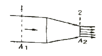
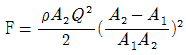
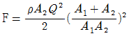
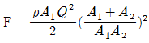
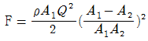
44. 속도 15 m/s로 항해하는 길이 80m의 화물선의 조파 저항에 관한 성능을 조사하기 위하여 수조에서 길이 3.2m인 모형 배로 실험을 할 때 필요한 모형 배의 속도는 몇 m/s인가?
45. 정상, 균일유동장 속에 유동방향과 평행하게 놓여진 평판 위에 발생하는 층류 경계층의 두께 δ는 x를 평판 선단으로부터의 거리라 할 때, 비례값은?
46. 관로내 물(밀도 1000kg/m3)이 30m/s로 흐르고 있으며 그 지점의 정압이 100 kPa일 때, 정체압은 몇 kPa 인가?
47. 다음 중 유체에 대한 일반적인 설명으로 틀린 것은?
48. 중력과 관성력의 비로 정의되는 무차원수는? (단, ρ : 밀도, V : 속도, l : 특성 길이, μ : 점성계수, P : 압력, g : 중력가속도, c : 소리의 속도)
49. 그림과 같이 경사관 마노미터의 직경 D=10d이고 경사관은 수평면에 대해 θ만큼 기울여져 있으며 대기 중에 노출되어 있다. 대기압보다 Δp의 큰 압력이 작용할 떄, L과 Δp와 관계로 옳은 것은? (단, 점선은 압력이 가해지기 전 액체의 높이이고, 액체의 밀도는 ρ, θ=30° 이다.)
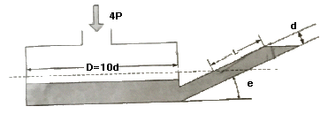
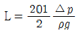
50. 아래 그림과 같이 직경이 2m, 길이가 1m인 관에 비중량 9800N/m3인 물이 반 차있다. 이관의 아래쪽 사분면 AB 부분에 작용하는 정수력의 크기는?
51. 유선(streamline)에 관한 설명으로 틀린 것은?
52. 안지름 0.1m인 파이프 내를 평균 유속 5m/s로 어떤 액체가 흐르고 있다. 길이가 100m 사이의 손실수두는 약 몇 m인가? (단, 관내의 흐름으로 레이놀즈수는 1000 이다.)
53. 원관에서 난류로 흐르는 어떤 유체의 속도가 2배가 되었을 때, 마찰계수가 1/√2배로 줄었다. 이때 압력손실은 몇 배 인가?
54. 유속 3m/s로 흐르는 물속에 흐름방향의 직각으로 피토관을 세웠을 때, 유속에 의해 올라가는 수주의 높이는 약 몇 m 인가?
55. 항력에 관한 일반적인 설명 중 틀린 것은?
56. 다음 중 체적 탄성계수와 차원이 같은 것은?
57. 다음 중 질량 보존을 표현한 것으로 가장 거리가 먼 것은? (단, ρ는 유체의 밀도, A는 관의 단면적, V는 유체의 속도이다.)
58. 공기가 기압 200kPa일 때, 20℃에서의 공기의 밀도는 약 몇 kg/m3인가? (단, 이상기체이며, 공기의 기체상수 R=287J/kg·K이다.)
59. 비점성, 비압축성 유체가 그림과 같이 작은 구멍을 향해 쐐기모양의 벽면 사이를 흐른다. 이 유동을 근사적으로 표현하는 무차원 속도 포텐셜이 ø=-2lnr로 주어질 때, r=1인 지점에서의 유속 V는 몇 m/s인가? (단, 로 정의한다.)
60. 압력구배가 영인 평판위의 경계층 유동과 관련된 설명 중 틀린 것은?
4과목: 유체기계 및 유압기기
61. 원심펌프에서 발생하는 여러 가지 손실 중 원심 펌프의 성능, 효율에 가장 큰 영향을 미치는 손실은?
62. 다음 중 유체기계로 분류할 수 없는 것은?
63. 수차의 형식 중에서 유량변화가 심한 곳에 사용할 수 있도록 가동익을 설치하여 부분부하에 대하여 높은 효율을 얻을 수 있는 수차는?
64. 펌프 운전 중 수격현상을 방지하기 위한 대책으로 틀린 것은?
65. 유효 낙차 70m, 유량 95m3/s인 하천에서 수차를 이용하여 발생한 동력이 58600kW일 때 이 수차의 효율은 약 몇 % 인가?
66. 입력축과 출력축의 토크를 변환시키기 위해 펌프 회전차와 터빈 회전차 중간에 스테이터를 설치한 유체전동기구는?
67. 다음 중 수차를 가장 올바르게 설명한 것은?
68. 사류 펌프(diagonal flow pump)의 특징에 관한 설명 중 틀린 것은?
69. 다음 중 그 구조나 사용 용도, 사용 빈도 등의 관점에서볼 때 일반펌프가 아닌 특수펌프만으로 구성된 것은?
70. 관류형 송풍기에 관한 설명으로 틀린 것은?
71. 램이 수직으로 설치된 유압 프레스에서 램의 자중에 의한 하강을 막기 위해 배압을 주고자 설치하는 밸브로 적절한 것은?
72. 유압 배관 중 석유계 작동유에 대하여 산화작용을 조장하는 촉매역할을 하기 때문에 내부에 카드뮴 또는 니켈을 도금하여 사용하여야 하는 것은?
73. 베인모터의 장점에 관한 설명으로 옳지 않은 것은?
74. 그림과 같은 회로도는 크기가 같은 실린더로 동조하는 회로이다. 이 동조회로의 명칭으로 가장 적합한 것은?
75. 유압펌프에 있어서 체적효율이 90% 이고 기계효율이 80% 일 때 유압펌프의 전효율은?
76. 다음 중 작동유의 방청제로서 가장 적당한 것은?
77. 그림과 같은 압력제어 밸브의 기호가 의미하는 것은?
78. 그림과 같은 유압 잭에서 지름이 D2=2D1일 때 누르는 힘 F1과 F2의 관계를 나타난 색으로 옳은 것은?
79. 펌프의 무부하 운전에 대한 장점이 아닌 것은?
80. 유압기기와 관련된 유체의 동역학에 관한 설명으로 옳은 것은?(오류 신고가 접수된 문제입니다. 반드시 정답과 해설을 확인하시기 바랍니다.)
5과목: 건설기계일반 및 플랜트배관
81. 교상용접(Soild-Sate Welding) 형식이 아닌 것은?
82. 판재의 두께 6mm, 원통의 바깥지름 500mm인 원통의 마름질한 판뜨기의 길이[mm]의는 약 몇 얼마인가?
83. 밀링작업에서 분할대를 사용하여 원주를 씩 등분하는 방법으로 옳은 것은?
84. 단조를 위한 재료의 가열법 중 틀린 것은?
85. 주조에서 열점(hot spot)의 정의로 옳은 것은?(오류 신고가 접수된 문제입니다. 반드시 정답과 해설을 확인하시기 바랍니다.)
86. 조립형 프레임이 주조 프레임과 비교할 때 장점이 아닌 것은?
87. 측정기의 구조상에서 일어나는 오차로서 눈금 또는 불균일이나 마찰, 측정압 등의 변화 등에 의해 발생하는 오차는?
88. 슈퍼 피니싱에 관한 내용으로 틀린 것은?
89. 금속면에 크롬을 고온에서 확산 침투시키는 것을 크로마이징(cromizing)이라 한다. 이는 주로 어떤 성질을 향상시키기 위함인가?
90. 방전가공에서 가장 기본적인 회로는?
91. 불도저를 이용한 확토작업에서 작업거리(L) =100m, 전진속도(V1) = 10m/min, 후진 속도(V2) = 8m/min, 기어변환 소요시간 (t)=20 sec일 경우 1회 작업 사이클 시간(Cm)은 약 몇 min인가?
92. 콘크리트를 구성하는 재료를 저장하고 소정의 배합 비율대로 계량하고 MIXER에 투입하여 요구되는 품질의 콘크리트를 생산하는 설비는?
93. 시가지의 큰 건물이나 구조물 등의 기초공사 작업 시, 회전식 버킷에 의해 지반을 천공하여, 소음과 진동이 작고 큰 지름의 깊은 구멍을 뚫는데 가장 적합한 굴착 기계는?
94. 머캐덤 롤러는 차동장치를 갖고 있는데 차동장치를 사용하는 목적으로 가장 적합한 것은?
95. 건설기계에서 기관에서 윤활유의 역할이 아닌 것은?
96. 1차 쇄석기(crusher)는 어느 것인가?
97. 모터 그레이더가 가장 효과적으로 할 수 있는 작업은?
98. 공기 압축기에 관한 설명으로 틀린 것은?
99. 카운터 밸런스 지게차의 마스트 후경각의 범위로 가장 알맞은 것은?(오류 신고가 접수된 문제입니다. 반드시 정답과 해설을 확인하시기 바랍니다.)
100. 오스테나이트 스레인리스강의 설명으로 틀린 것은?